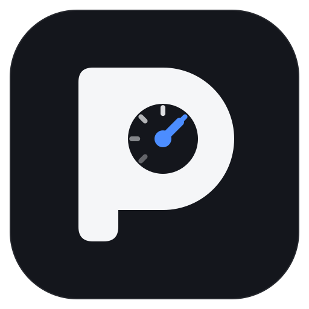

Optimize your PC with proof, not placebo.
Pulse finds what's actually slowing your PC, only changes settings Microsoft documents, and measures the result in your own game. If a tweak doesn't help, it tells you, and undoes it.
Free and open source. Windows 10 and 11, 64-bit.
- Average FPS
- 211.4 to 210.9
- 1% low FPS
- 142.1 to 143.0
- Run-to-run variation
- ±2.6 FPS
Most slow PCs have a setup problem, not a settings problem.
Before suggesting a single tweak, Pulse checks for the mistakes that cost the most. They're free to fix and worth more than any registry setting.
- Monitor plugged into the wrong portA cable in the motherboard instead of the graphics card makes games run on the weak built-in chip.
- Memory in single-channel mode or at its slow default speedOne stick, the wrong slots, or XMP/EXPO off can cost a lot of FPS in CPU-heavy games.
- A monitor set below its refresh rateA 144 Hz screen left at 60 Hz is the most common free upgrade there is.
- Games installed on a hard drivePulse names them and shows how to move them to an SSD without re-downloading.
- Wi-Fi lag and slow Ethernet linksIncluding the 2.4 GHz band and cables stuck at 100 Mbps.
- A CPU that throttles under loadA short load test shows whether heat or power limits are holding it back.
Everything explained before anything changes.
Every finding says what Pulse saw, why it matters and what to do. Every tweak shows the exact setting it touches and links to the source.
Fits your hardware
Tweaks that can't help your PC are dimmed with the reason, like GPU scheduling on a card without DLSS Frame Generation.
Undo anything
The exact previous value of every setting is saved, plus a Windows restore point before your first change.
Security included
Microsoft Defender scans and a check of every place malware hides to start with Windows.
We checked every tweak against Microsoft's own documentation.
Popular tweaks that do nothing, or that Microsoft documents as unused, aren't in Pulse. Here's a sample of what made the cut and what didn't.
| Tweak | Verdict | Why |
|---|---|---|
| Turn off background game recording | Kept | Uses the official Group Policy setting instead of undocumented registry values. |
| Block adware and bundled junk | Kept | Switches Defender's unwanted-app protection from audit to block. Microsoft Learn |
| Hardware-accelerated GPU scheduling | Only where it helps | Microsoft says users shouldn't notice significant changes; it's offered for RTX 40-series and newer, where DLSS Frame Generation needs it. DirectX blog |
| "GPU Priority" and "SFIO Priority" for games | Cut | Microsoft documents these values as not yet used and not used. Microsoft Learn |
| Network throttling index | Cut | No Microsoft documentation; the limit it targets was described for Windows Vista. |
| Timer resolution registry tweaks | Cut | Timer resolution has been per-process since Windows 10 version 2004. Microsoft Learn |
Automated tests make sure cut tweaks can never come back in a future version.
How Pulse decides whether a tweak worked.
Frame times are recorded with Intel's open-source PresentMon, the same tool hardware reviewers use.
- Warm upOne run to load shaders and settle clocks. It isn't counted.
- AlternateRuns switch between tweak off and on, so heat and background tasks affect both sides equally.
- CompareAverage FPS, 1% lows and latency, with a 95% confidence range for the difference.
- DecideIt only counts as helped if the gain is bigger than your PC's normal variation. Otherwise, undo.
Built to be trusted with your PC.
These promises are checked by automated tests on every build. If the code ever breaks one, the build fails.
- Saves every setting before changing it
- Never uploads anything
- Never touches games or anti-cheat
- Never turns off your antivirus
- Only deletes files you approve on Clean up
- Never changes BIOS settings
Verify your download
Each release is built by GitHub from the public code, with a SHA-256 checksum and signed build proof. With the GitHub CLI installed, run:
gh attestation verify PulseOptimizer.zip --repo PulseOptimizer-app/PulseOptimizer
Questions
Windows says "Windows protected your PC". Is it safe?
That warning shows for new apps that aren't code-signed yet. Click More info, then Run anyway. The source code is public, each release is built by GitHub from it, and the release page lists checksums so you can confirm your copy is genuine.
Why does it need administrator rights?
Most tweaks change system-wide settings, and restore points and Defender scans need admin access. Pulse asks once when it opens.
Can it get me banned in online games?
Pulse never reads, changes or injects into game processes. Frame measurement uses Windows' own event tracing through PresentMon, the same method overlays and reviewers use.
How do I undo everything?
Open Undo and restore and choose Undo everything. Each setting goes back to the exact value it had before. You can also roll back with the Windows restore point Pulse creates before your first change.
Will it make my games faster?
If your PC has a setup problem, often a lot. If it's already set up well, tweaks usually make small differences, and Pulse will show you honestly which ones helped on your PC.

Find out what actually speeds up your PC.
Free and open source. Windows 10 and 11, 64-bit.